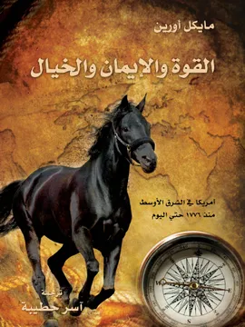

القوة والإيمان والخيال: أمريكا في الشرق الأوسط منذ ١٧٧٦ حتى اليوم

قراءة عربية أصلية محددة النطاق في الصفحات 45 إلى 50 من ملف PDF المرتبط، وليست تلخيصا كاملا للكتاب. نناقش ما تدعمه هذه المقاطع فقط.
جون ليديارد: أول أمريكي يستكشف الشرق الأوسط
يفتتح أورين الكتاب بمشهد شاب في الثالثة والعشرين، جون ليديارد، ينحت قاربًا من شجرة صنوبر ويبحر به في نهر كونيتيكت سنة ١٧٧٣ هربًا من رقابة رئيس جامعة دارتموث، وهو لا يعلم أنه سيصبح أول مواطن في الولايات المتحدة المستقلة يستكشف الشرق الأوسط. يعمل بحارًا ثم يغادر سفينته عند جبل طارق ويلتحق بالبحرية البريطانية، فيجد نفسه على سفينة «ريزولوشن» في رحلة الكابتن كوك الثالثة، ويدوّن وصف سكان بحر الجنوب ومقتل كوك في هاواي. ويربط المؤلف هذه القصة ببداية مشاركة أمريكا في المنطقة.
زاوية وحدود القراءة
قراءة موجزة من ص ٤٥ إلى ص ٥٠ من أصل ٨٩٨ صفحة، تعرض «مقدمة: الطريق إلى المجد» عن رحلة جون ليديارد، لا الكتاب كاملًا.
الطبعة والقراءة
هذه الترجمة صادرة ومتاحة مجانًا بموجب اتفاق قانوني بين مؤسسة هنداوي ودار نشر دبليو دبليو نورتون أند كومباني، إنك. حقوق الترجمة محفوظة لمؤسسة هنداوي.
تنزيل PDF المجاني ↓ القراءة والمصدر الرسمي ↗